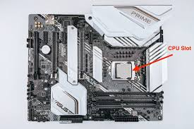
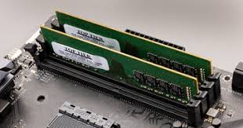
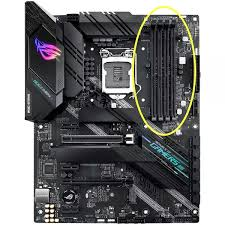
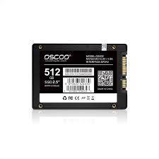
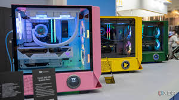
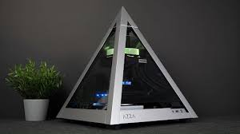
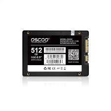
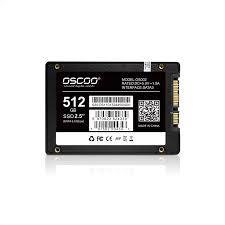

The CPU is the brain of the computer. It processes instructions from programs
and then tells other components what to do. These range from opening applications, running software,
to performing calculations. Choosing the right CPU can greatly impact the performance of you PC, especially larger task like
gaming or video editing. When selecting a CPU, consider factors such as clock speed, number of cores, and
compatibility with your motherboard. With CPUs you have the choice between intel or AMD if running windows, both gret options but to take into considerationthe price.
Motherboard

The Motherboard is the main circuit board of the computer. It's job is connecting all the components together
and allows them to communicate with each other. All the components include the CPU (previusly mentioned), RAM,
storage devices, GPU. When choosing a motherboard you need to make sure that it is compatible with the CPU you have chosen,
as well as the other components you plan to use in the build.
RAM (Memory)


RAM or random access memory is a type of short-term memory that helps the computer run programs.
It allows multiple applicatiosns to run at the same time without slowing the system. More sticks of RAM generally
means better performance, especially when running multiple applications or playing games.
When choosing RAM, consider factors such as capacity (measured in GB), speed (measured in MHz),
and compatibility with your motherboard.
Storage

With Storage, there are two main types to choose from, HDD (Hard Disk Drive on the left) and SSD (Solid State Drive on the right).
HDDs are the traditional type of storage and are generally less expensive than SSDs but they are also slower.
SSDs are faster and more reliable than HDDs, but they are also more expensive.
HDDs are installed in the drive bays of the case you choose, while SSDs can be installed in the drive bays or on the motherboard itself
using an M.2 slot. When choosing storage, consider factors such as capacity (measured in GB or TB),
speed (measured in RPM for HDDs and read/write speeds for SSDs), and compatibility with your motherboard.
GPU (Graphics Card)
The GPU or the Graphics Processing Unit is repsonsible for rendering images, videos, and
graphics on the screen. It is espeically important for gaming, video editing and graphics design. The GPU can
possibly the most expensive part of a build so when choosing a GPU, consider factors such as performance, memory (measured in GB),
and compatibility with your motherboard and power supply.
Power Supply
The Power Supply Unit (PSU) provides electricity to all the components in the computer.
It conver power from the wall outlet into the correct voltage and current needed by the components.
When choosing a power supply, consider factors such as wattage (measured in watts), efficiency (measured in 80 Plus ratings),
and compatibility with your components.
Cases


The case is the outer shell of the computer where all the components are put together.
It protects the hardware and also helps with airflow to keep the components nice and cool. Cases
can be ordinary shells or very unique. With each design there are pros and cons. When choosing a case be sure to
choose one that you'll like and that is within your budget.

 
